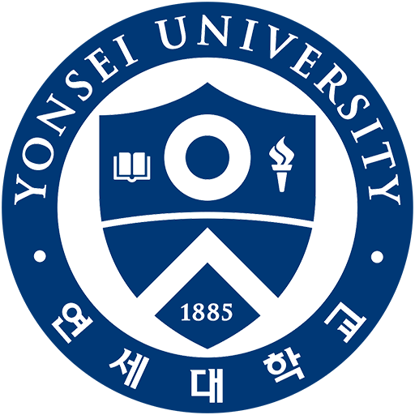
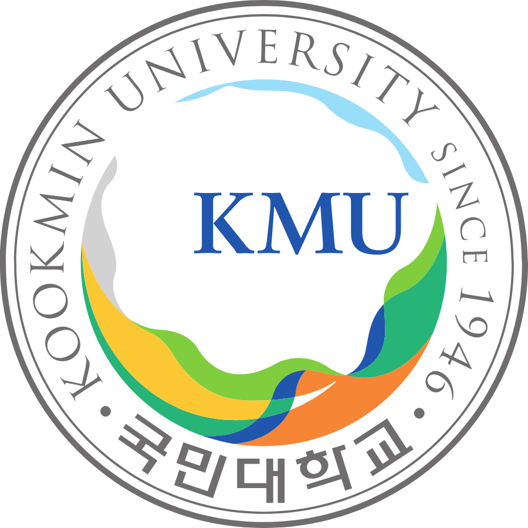

Storyline
각 테마를 클릭하면 타임라인이 이동합니다.
1984
경남 거제
1985
1986
1987
1988
전남 광양
1989
1990
1991
1992
충남 대천
1993
1994
1995
경기 수원
1996
첫 죽을 고비
1997
1998
경기 용인
부도
1999
2000
한국애니메이션고등학교 입학
한국애니메이션고등학교 학생회 부회장
2001
한국애니메이션고등학교 학생회 선도부장
2002
예체능에서 문과 입시 전환
밴드부
2003
한국애니메이션고등학교 졸업
재수
2004
국민대학교 언론정보학부 입학
2005
서울 송파
band DAL
2006
2007
2008
부도
국민대학교 언론정보학부 학생회 부회장 사회과학대
2009
국민대학교 언론정보학부 학생회장 사회과학대
2010
두번째 죽을 고비
2011
국민대학교 언론정보학부 졸업
법률가 도전
2012
로스쿨 탈락
2013
로스쿨 탈락
2014
로스쿨 탈락
2015
2016
서울 강남
2017
연세대학교 행정대학원 입학
경기도경제과학진흥원 노동조합 사무국장
2018
경기도 공공기관노동조합 총연합 사무국장
2019
2020
경기도경제과학진흥원 노동조합 노조위원장
2021
경기도 공공기관노동조합 총연합 감사
2022
연세대학교 행정대학원 졸업 공공정책 석사
경기도 공공기관노동조합 총연합 부의장
2023
경기도경제과학진흥원 노동조합 통합 및 1대 통합 노조위원장
2024
경기도경제과학진흥원 퇴사
2025
민간 전환
2026
벤처투자전문인력 교육 수료
박사 과정 도전(기술경영학)
Education
예고에서 문과로, 언론고시와 로스쿨 실패로 부터,
정책 전문가로, 민-관 하이브리드 기획자로 쉼없는 경력 개발

2017.9. ~ 2022.8.
공공정책석사
연세대학교 행정대학원

2004.3. ~ 2011.2.
언론정보학사 · 광고학사
국민대학교 언론정보학부
2000.3. ~ 2003.2.
1기
한국애니메이션고등학교
2026.6. ~ 2026.7.
벤처투자전문인력 양성 교육
한국벤처캐피탈협회
2012.2. ~ 2014.12.
법률(헌법, 형법, 민법, 상법, 행정법, 노동법 등)
로스쿨 / 사법시험 준비
Class & Moving
남도에서 태어나
부모님 쫓아 수도권까지 촌 소년 상경기(上京)
각 시점을 클릭하면 거주지와 활동지, 동선이 표시됩니다.
연도거주지주활동지역비고
Times of Challenge
새로운 것들을 향한 변화와 도전의 시간들
박스를 클릭하면 도전 이벤트가 드러납니다.
'95'96'97'98'99'00'01'02'03'04'05'06'07'08'09'10'11'12'13'14'15'16'17'18'19'20'21'22'23'24'25'26
Outside World
IMF리먼 사태코로나
Connected World
사업 부도부동산 손실
Own World
첫 죽을 고비예체능에서 문과 입시 전환대학교 재수Band Dal공모전 1회
(입상 1회)공모전 7회
(입상 4회)공모전 2회
(입상 0회)두번째 죽을 고비법률가 도전로스쿨 탈락 1차로스쿨 탈락 2차로스쿨 탈락 3차대학원 입학 시도(탈락)대학원 입학(재수)경기도공공기관 연합결성경과원 퇴사민간 전환박사 과정 도전(기술경영학)
(입상 1회)공모전 7회
(입상 4회)공모전 2회
(입상 0회)두번째 죽을 고비법률가 도전로스쿨 탈락 1차로스쿨 탈락 2차로스쿨 탈락 3차대학원 입학 시도(탈락)대학원 입학(재수)경기도공공기관 연합결성경과원 퇴사민간 전환박사 과정 도전(기술경영학)
Life Timeline
Leadership & Passion
필요할 때 앞장서서
1인 3역, 4역을 맡으며 성장한 커리어
빨간색 점을 클릭하면 해당 포지션에서 진행했던 프로젝트의 포트폴리오를 볼 수 있습니다.
Year
회사 · 직급
학력
Role 1
Role 2
2026
스테이션케이 · 팀장
novalabs(용역)
개인 Projecct
2025
2024
경기도경제과학진흥원 · 과장
2023
경기도경제과학진흥원 노동조합 통합 노조위원장
경기도공공기관노동조합총연합 부위원장
2022
연세대학교 행정대학원(6학기)
경기도경제과학진흥원 노동조합 노조위원장
2021
연세대학교 행정대학원(5학기)
경기도공공기관노동조합총연합 감사
2020
경기도경제과학진흥원 · 대리
경기도경제과학진흥원 노동조합 노조위원장(대행)
2019
연세대학교 행정대학원(3-4학기)
경기도경제과학진흥원 노동조합 사무국장
경기도공공기관노동조합총연합 사무국장
2018
연세대학교 행정대학원(2학기)
2017
연세대학교 행정대학원(1학기)
2016
경기도경제과학진흥원 · 사원
2015
2014
2013
2012
2011
2010
국민대학교(9학기)
2009
국민대학교(7-8학기)
국민대학교 언론정보학부 회장
국민대학교 사회과학대 학생회
2008
국민대학교(5-6학기)
국민대학교 언론정보학부 부회장
2007
국민대학교(3-4학기)
2006
국민대학교(2힉기)
2005
band Dal
2004
국민대학교(1학기)
2003
2002
한국애니메이션고등학교(3학년)
2001
한국애니메이션고등학교(2학년)
학생회 선도부장
밴드부
2000
한국애니메이션고등학교(1학년)
학생회 부회장